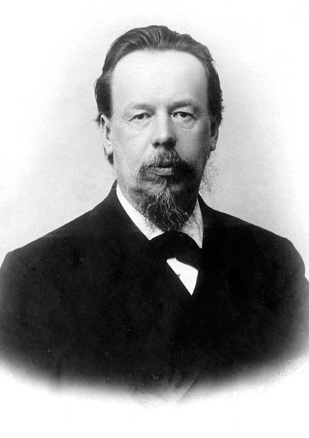

|
|---|
Александр Степанович Попов(4 (16) марта 1859 или 16 марта 1859, Турьинские рудники, Пермская губерния — 31 декабря 1905 (13 января 1906), Санкт-Петербург)Русский физик и электротехник, профессор, изобретатель в области радиосвязи, Почётный инженер-электрик (1899).Приехав в 1877 году в Петербург, А.С. Попов подал ректору Петербургского университета прощение о допущении к «проверочному испытанию» и, успешно сдав его, был принят на Физико-математический факультет. Юношеские годы будущего изобретателя радио протекали в эпоху великих открытий в области физики, внедрения электричества в промышленность и жизнь, в период зарождения новой прикладной науки – электротехники. А.С. Попова интересовали научные открытия во всех областях применения электричества. Он, например, занимался исследованиями только что открытых рентгеновских лучей. Им был изготовлен один из первых в России рентгеновских аппаратов, получены снимки различных предметов, в том числе снимок руки человека. При его поддержке в Кронштадтском военно-морском госпитале в 1897 году был оборудован рентгеновский кабинет, впоследствии некоторые боевые корабли были оснащены рентгеновскими аппаратами. Перечень изобретений Александра Степановича Попова включает не только систему телеграфии без проводов и систему радиосвязи, но и первый прибор для регистрации электромагнитных излучений атмосферного происхождения — грозоотметчик (июль 1895 года); первый детекторный радиоприемник с приемом телеграфных сигналов на слух (сентябрь 1899 года); первый кристаллический точечный диод (июнь 1900 года); первая радиотелефонная система (декабрь 1903 года). 25 апреля (7 мая) 1895 г. Александр Степанович Попов впервые представил своё главное изобретение на заседании Русского физико-химического общества, где выступил с докладом и демонстрацией созданного им первого в мире радиоприемника. Этот день вошел в историю мировой науки и техники как день рождения радио. |
Меню |
Фотография |
©2021 |
|---|